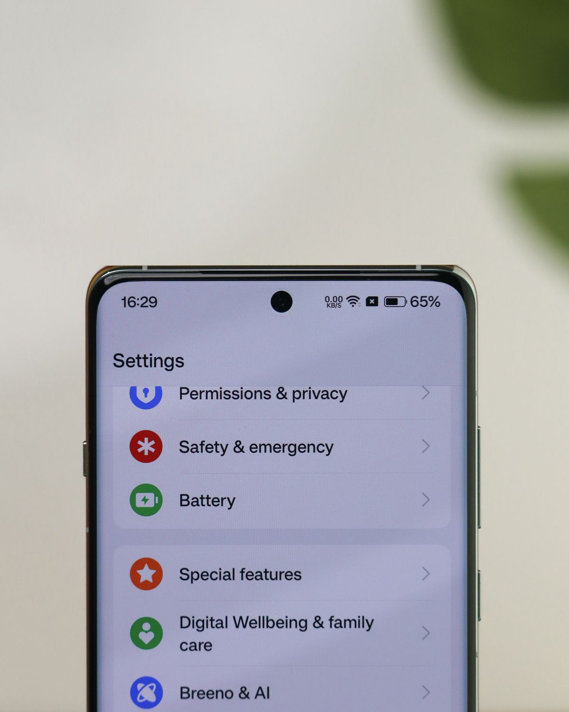

Kamu bisa mengunci aplikasi di HP tanpa memasang aplikasi tambahan. Di Android, pakai fitur App Lock bawaan yang ada di Xiaomi, OPPO, vivo, dan realme, atau Secure Folder di Samsung. Di iPhone, tekan lama ikon aplikasi lalu pilih Require Face ID, fitur yang hadir sejak iOS 18. Semua cara di artikel ini gratis dan memakai fitur bawaan, per November 2026.
Mengunci aplikasi artinya menambah satu pintu sebelum aplikasi terbuka: PIN, pola, sidik jari, atau Face ID. Kunci layar saja tidak cukup begitu HP kamu dipinjam orang lain dalam keadaan terbuka, karena semua aplikasi langsung bisa dibuka. Dengan kunci aplikasi, WhatsApp, galeri, dan aplikasi bank tetap meminta verifikasi meski HP sudah terbuka. Jalurnya berbeda menurut merek HP, tapi semuanya memakai fitur bawaan dan gratis, jadi tidak ada izin aneh untuk aplikasi pengunci.
Bagaimana cara mengunci aplikasi di iPhone?
Langkahnya paling singkat di iPhone, asalkan sudah memakai iOS 18 atau yang lebih baru, karena fitur kunci aplikasi baru hadir di iOS 18. Kalau menu Require Face ID tidak muncul, perbarui dulu iOS lewat Pengaturan, Umum, Pembaruan Perangkat Lunak.
- Di layar utama, tekan lama ikon aplikasi yang mau dikunci sampai menu muncul.
- Ketuk Require Face ID, Touch ID, atau Passcode, sesuai perangkatmu.
- Ketuk Require Face ID sekali lagi untuk mengunci aplikasi itu.
Sejak itu, aplikasi meminta Face ID setiap kali dibuka dan terkunci lagi begitu kamu keluar. Isi di dalamnya juga tidak muncul di pratinjau notifikasi, pencarian, atau saran Siri. Kalau mau ikonnya hilang sekalian, pilih Hide and Require Face ID, dan aplikasi pindah ke folder Hidden di bawah App Library. Hanya aplikasi unduhan App Store yang bisa disembunyikan, dan aplikasi bawaan seperti Kalkulator, Kamera, Jam, dan Pengaturan tidak bisa dikunci. Anak di bawah 13 tahun dalam grup Keluarga juga tidak bisa memakai fitur ini.
Bagaimana cara mengunci aplikasi di HP Android?
Android tidak punya satu tombol kunci yang sama di semua merek, tapi hampir semua HP Android baru punya App Lock atau Kunci Aplikasi bawaan. Kalau tidak ketemu, ketik Kunci Aplikasi di kolom pencarian Pengaturan. Berikut jalurnya per merek, per November 2026.
Xiaomi, Redmi, dan POCO: buka Pengaturan, pilih Aplikasi, ketuk App Lock, lalu ketuk Aktifkan. Buat pola atau PIN, tautkan Akun Xiaomi bila ditawarkan, lalu nyalakan sakelar di aplikasi yang mau dikunci. Di aplikasi Keamanan ada juga menu Hidden Apps untuk menyembunyikan ikonnya sekalian.
OPPO dan realme: keduanya memakai ColorOS, jadi jalurnya sama. Buka Pengaturan, pilih Privasi, ketuk Kunci Aplikasi, atur kata sandi privasi, lalu pilih aplikasinya. Di menu yang sama ada opsi menyembunyikan aplikasi, yang hanya bisa dibuka lewat kode akses khusus.
vivo: buka aplikasi iManajer, pilih Privasi, lalu Enkripsi Aplikasi. Buat kata sandi privasi, aktifkan sidik jari sebagai pembuka, lalu nyalakan enkripsi di aplikasi yang dipilih. Jalur lewat Pengaturan, Privasi, Enkripsi Aplikasi juga ada di sebagian model.
Samsung: tidak ada kunci per aplikasi, tapi ada Secure Folder, ruang terpisah yang dilindungi PIN, pola, kata sandi, atau sidik jari. Buka Pengaturan, Keamanan dan privasi, Secure Folder, masuk dengan akun Samsung, lalu tambahkan aplikasi dengan tombol Tambah aplikasi. Aplikasi di dalamnya adalah salinan terpisah, jadi kamu perlu masuk lagi ke akun di aplikasi itu.

Aplikasi apa saja yang sebaiknya dikunci dulu?
Jangan kunci semua aplikasi. Terlalu banyak permintaan verifikasi bikin kamu malas, lalu ujungnya kamu memilih PIN yang gampang ditebak. Mulai dari aplikasi yang sekali dibuka bisa menggerakkan uang atau membocorkan identitas: bank dan dompet digital, WhatsApp, galeri foto, dan email. Aplikasi belanja dan ojek online juga layak dikunci karena menyimpan alamat rumah dan riwayat pembayaran. Game dan media sosial bisa menyusul kalau HP sering dipinjam anak atau teman. Satu aturan praktis: kalau aplikasi itu bisa dipakai orang lain untuk berpura-pura jadi kamu, kunci.
Bagaimana kalau lupa PIN atau kata sandi kunci aplikasi?
Ini bagian yang paling sering bikin panik, dan jawabannya tergantung merek HP kamu. Di Xiaomi, pemulihan memakai Akun Xiaomi yang ditautkan saat pertama mengaktifkan App Lock, jadi tautkan akun itu sejak awal. Tanpa akun tertaut, sebagian model hanya bisa dibuka lewat reset pabrik, dan itu menghapus data HP. Di Samsung, aktifkan opsi reset dengan akun Samsung saat mengatur Secure Folder, karena opsi itu tidak bisa ditambahkan belakangan. Bila opsi itu tidak aktif, lupa kunci berarti tidak bisa membuka folder. Di OPPO, vivo, dan realme, atur pertanyaan keamanan saat membuat kata sandi privasi dan simpan kata sandi itu di tempat aman. Di iPhone, kunci aplikasi memakai Face ID atau kode sandi perangkat, jadi selama ingat kode sandi iPhone, kamu tetap bisa membuka aplikasi yang terkunci. Intinya: sebelum mengunci apa pun, pastikan dulu jalur pemulihannya sudah disiapkan.
Apakah WhatsApp bisa dikunci tanpa mengunci seluruh HP?
Ya. WhatsApp punya fitur Kunci Chat bawaan: tekan lama obrolan yang mau dikunci, ketuk nama kontak atau grup, lalu pilih Kunci Chat dan konfirmasi dengan sidik jari, PIN, atau Face ID. Obrolan itu pindah ke folder Obrolan Terkunci dan notifikasinya tidak lagi menampilkan nama dan isi pesan. WhatsApp juga punya kunci aplikasi di Pengaturan, Privasi, Kunci Aplikasi di Android atau Kunci Layar di iPhone. Cara ini berguna kalau kamu hanya mau melindungi WhatsApp, bukan semua aplikasi.
Kunci aplikasi itu pertahanan lapis kedua, bukan pengganti kunci layar. Pasang kunci layar yang kuat dulu, kunci aplikasi yang paling sensitif, dan siapkan jalur pemulihan sebelum kamu butuh. Lima menit mengatur hari ini lebih murah daripada panik saat HP dipinjam dan isi galeri atau rekening ikut terbuka.
Baca juga: cara melihat password WiFi yang sudah tersambung di HP, cara kompres video di HP agar kecil untuk WhatsApp, dan cara menghemat baterai HP Android biar awet seharian. Kamu juga bisa melihat kumpulan artikel Other dan artikel riset di blog.
Sumber dan Info Resmi
Fakta dan langkah di artikel ini merujuk ke sumber berikut:
- Apple Support: langkah mengunci atau menyembunyikan aplikasi di iPhone sejak iOS 18, Require Face ID, Hide and Require Face ID, aplikasi terkunci lagi setelah ditutup, isi tidak muncul di pratinjau notifikasi, pencarian, atau Siri, hanya aplikasi App Store yang bisa disembunyikan, anak di bawah 13 tahun dalam grup Keluarga tidak bisa memakai fitur ini.
- KapanLagi: panduan lengkap cara kunci aplikasi di HP, metode Android per merek dan iPhone.
- AXIS: jalur kunci aplikasi Samsung, OPPO, Xiaomi, vivo, dan iPhone lewat Screen Time.
- AndroidHebat: jalur Xiaomi Pengaturan, Aplikasi, App Lock, pemulihan lewat Akun Xiaomi, peringatan reset pabrik bila tanpa akun tertaut.
- TikTak: OPPO dan realme lewat Pengaturan, Privasi, Kunci aplikasi; vivo lewat iManajer, Privasi, Enkripsi aplikasi; Samsung lewat Secure Folder, per November 2026.
- UMA Technology: Secure Folder lewat Pengaturan, Keamanan dan privasi, Secure Folder; aplikasi di dalamnya salinan terpisah; opsi reset akun Samsung tidak bisa ditambahkan belakangan.
- Markicot: jalur kunci aplikasi per merek dan anjuran memakai kolom pencarian Pengaturan.
- by.U: Kunci Chat WhatsApp, folder Obrolan Terkunci, notifikasi tidak menampilkan nama dan isi pesan, kode rahasia.